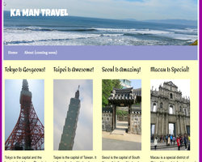
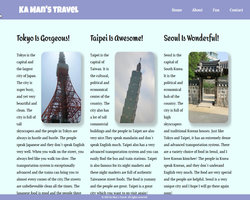

Projects/Assignments
Responsive Design and Responsive Typography
This responsive website focused on using the custom-coded grid system, media queries and resized images. I created four columns for the grid system, and I used several media queries to fit the layouts in different device screen sizes. In addition, Polyfill was downloaded and applied for multiple sized images; the size of the image in the "About" page would be changed depending on the screen sizes.
(Click on the image will open the website in a new tab.)
Sass and Compass
This responsive website focused on re-working the CSS into Sass. I was using Koala App (GUI) and Compass to compile the codes. The Sass codes include the usages of multiple variables, mixins, extend, nesting, built-in and if/else functions.
(Click on the image will open the website in a new tab.)
Foundation
This responsive website was built with the Foundation framework. It used the Foundation's grid system and incorporated the special grid features such as nesting and source ordering. It consisted the Foundation's navigation bar, styling, and form. Moreover, the JavasScript-based widgets like Interchange, Tooltip, Reveal, Tabs, etc, were also applied.
(Click on the image will open the website in a new tab.)
CSS4 Grids, Animation, Flexbox
Note: The websites must be viewed in Google Chrome with the Experimental Web Platform features enabled.
This projects has three parts: Flexbox, CSS4 grids, & Animation.
- Flexbox website: it used the Flexbox grid system.
- CSS4 Grids website: it was rebuilt with the CSS4 grids. Grid reordering and media queries were applied.
- CSS Anmiation and SVG website: an SVG image was worked on to display in several types: 3D transformation, 1 second transition, @keyframes animation, and the manipulation of one internal element of an SVG image.
(Click on the image will open the website in a new tab.)
Joomla
This website was built with one of the most popular Content Management Systems, Joomla. It was developed with Joomla's CAM structure - Category, Article, and Menu. A blog was included and it was shown as an FAQ. Joomla's extensions, including the full-featured image-gallery, the customized form, site map, and top of the page, were added during the implementation. A custom template was also applied to accommodate the website's theme. Note: This is not a responsive website.
(Click on the image will open the website in a new tab.)
WordPress

This website was developed with another popular Content Management Systems, WordPress. It applied the concept of pages and posts in WorPress. A blog was included and it was shown as an FAQ. There were several WordPress plugins: full-featured image gallery and a customized form. There were also a WordPress widget, breadcrumb. A custom template was also applied to accommodate the website's theme. Note: This is not a responsive website.
(Click on the image will open the website in a new tab.)
Drupal 8

This website was developed with the Content Management System, Drupal. Drupal was widely used in Government Agencies and School Systems. This website contained Drupal's basic page content type and the custom content type. Drupal's View was also added in the FAQ and the Press Release pages. Some core and downloaded moduels such as the Statistics, the Responsive Image, the Contact Block, and Scroll to Top were used to enhance the usability of the website. A blog was also included and it was shown as an FAQ. A custom template was applied to accommodate the website's theme. Note: This is not a responsive website.
(Click on the image will open the website in a new tab.)
Positioning, Forms, CSS3 Styling

This three-column layout website was developed with the netvigation bar that could be accessed from all pages. It made use of float and clear mechanism, and the header and the footer were in the fixed position. It included a form with the HTML5 input types. The stylings such as Google fonts, Rounded corners, and Box/drop shadows were also applied to enhance the outlook view of the website. Note: This is not a responsive website.
(Click on the image will open the website in a new tab.)
jQuery
This website focused on using jQuery to create actions, for examples, the fade in/out and the slide up/down, when the click and hover effects happened. The form was developed with the jQuery-driven interactive elements and the effect tied to an if/else choice. In addition, the "Fun" page was implemented with jCanvas, and the user can select their choices from the drop-down lists to create their own postcards. Note: This is not a responsive website.
(Click on the image will open the website in a new tab.)
jQuery Mobile and jQuery UI
This website was created using jQuery Mobile. It used the jQuery Mobile grid system and have at least one breakpoint in the media query. I made use of the widgets including the popup widget and the control group widget. This website has a custom theme and the form was using the HTML5 field types. Moreover, the jQuery Mobile touch events such as the swipe left and swip right was added to enhance the mobile usability.
(Click on the image will open the website in a new tab.)